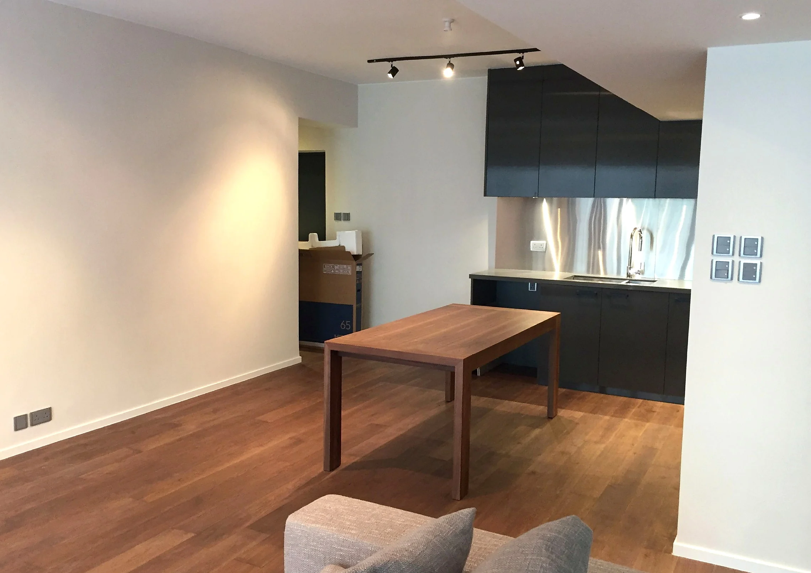
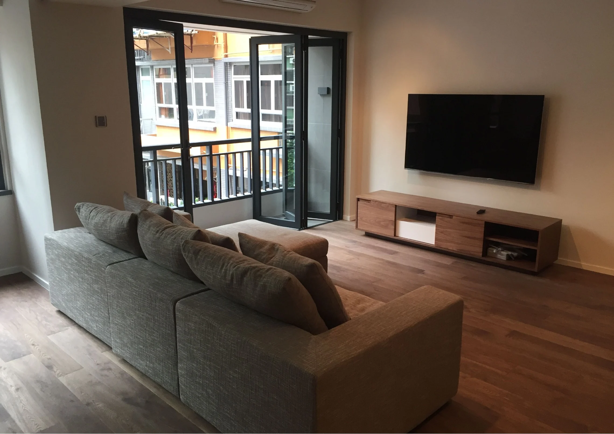
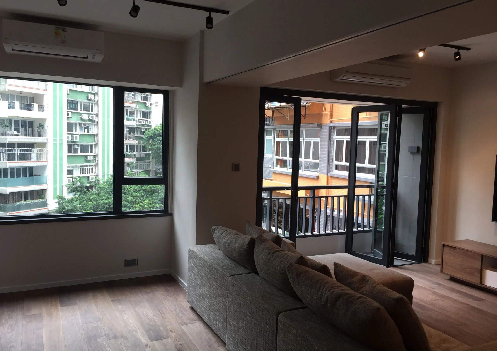
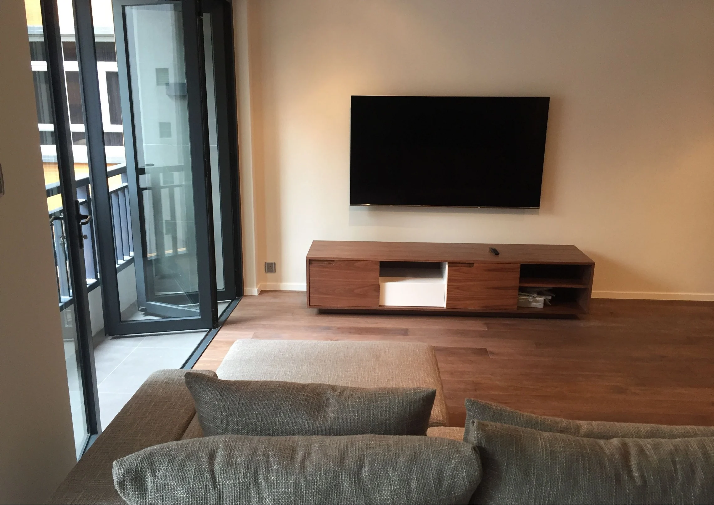

Connected sequence
The supplied views read from living to dining and kitchen, with timber flooring providing a continuous visual base across the shared interior.
A Mid-Levels home photographed across its living, dining and kitchen spaces. Timber flooring runs through the connected interior, while the dark kitchen cabinetry and media storage provide a quiet counterpoint to pale walls.

Living, media and kitchen views from the supplied Mid-Levels project record.



The supplied views read from living to dining and kitchen, with timber flooring providing a continuous visual base across the shared interior.
Pale wall surfaces keep the room visually open; dark cabinetry and a simple media unit anchor the living and kitchen edges.
The supplied source record is photographic rather than a written client brief or contract schedule. This description is limited to visible finishes, furnishings and spaces; it does not imply an unrecorded scope or outcome.